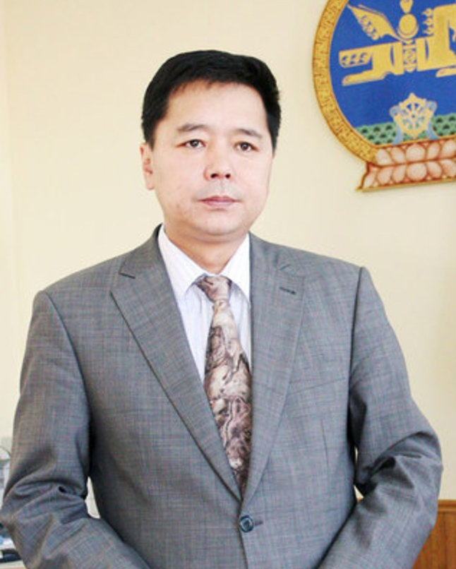
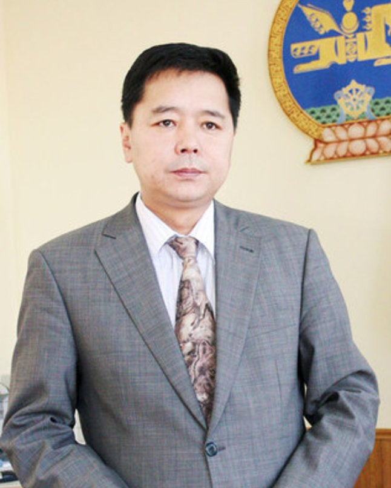

State Bank
 

Bayarsaikhan.D
Chief Executive Officer
Address: Baga toiruu 7/1, 1st khoroo, Chingeltei District, Ulaanbaatar 14201, Mongolia
Tel: (976)-1881
Fax: (976)-11-330595
Web: http://statebank.mn
State Bank was established as a completely state-owned bank in order to ensure Mongolia’s banking and financial stability, and to protect the rights and render risk-free services to its customers. Since its establishment in 2009, the Bank has been operating to win public credence while ensuring the financial needs of the country’s citizens and corporate entities. It takes pride in its professional staff and advanced technology and in the swift and reliable service it provides its customers. In five years it already has made significant contributions to the development of Mongolia’s banking system and economy. In accordance with State Bank Decree #41, approved by the Board of Directors on August 16, 2013, the Bank’s Organizational Chart was revised. In total, 16 departments with 33 corresponding subordinate units support 540 branches, about 200 ATMs and 1500 merchants that offer the Bank’s services. The Bank has a presence in almost all soums and settlement areas of the country.
As of today, State Bank has MNT 1.8 trillion in assets. It is maintaining constancy in its adherence to prudential ratios set by the Bank of Mongolia, such as capital adequacy ratio, liquidity ratio, etc., Taking SME and retail banking services as its targeted markets, it is endeavoring to build a banking system that reaches every corner of the country The Bank’s esteemed customers enjoy all types of modern, efficient Internet-based banking services. These include banking services via smart phones and pervasive access to ATMs. State Bank is trying to differentiate itself in the banking and financial sector of Mongolia. It is doing so by showing respect to its customers, building good relationships in the communities that it serves and by rendering the most advanced banking services to the country’s citizens. It aims to provide the best service, to build welcoming relationships, to create minimum risk conditions and to be efficient.